






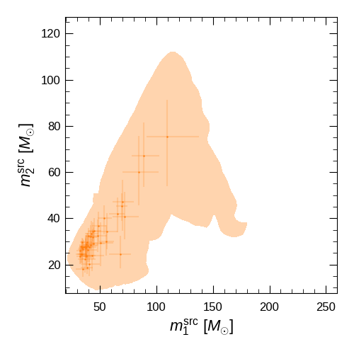
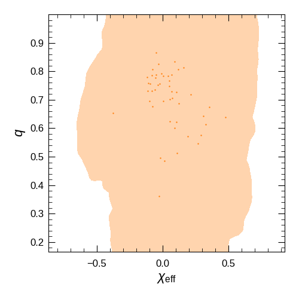
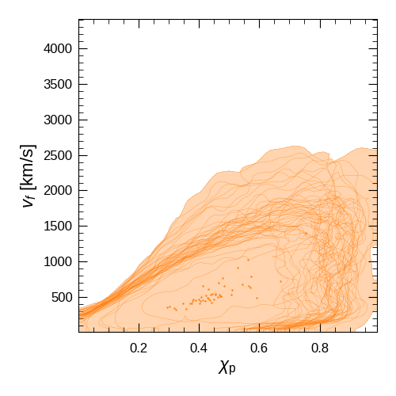

Catalog plots#
Here we have some catalog plots showing the ensemble results of the catalog. (it may take a few minutes to download the data the first time you run this notebook.)
Show code cell content
! pip install nrsur_catalog
Looking in indexes: https://pypi.org/simple, https://packagecloud.io/eugeny/tabby/pypi/simple
Requirement already satisfied: nrsur_catalog in /home/avaj040/Documents/venvs/NRSurCat-1/lib/python3.9/site-packages (0.0.6)
Requirement already satisfied: matplotlib in /home/avaj040/Documents/venvs/NRSurCat-1/lib/python3.9/site-packages (from nrsur_catalog) (3.9.4)
Requirement already satisfied: loguru in /home/avaj040/Documents/venvs/NRSurCat-1/lib/python3.9/site-packages (from nrsur_catalog) (0.7.3)
Requirement already satisfied: bilby[gw] in /home/avaj040/Documents/venvs/NRSurCat-1/lib/python3.9/site-packages (from nrsur_catalog) (2.3.0)
Requirement already satisfied: bilby.cython>=0.3.0 in /home/avaj040/Documents/venvs/NRSurCat-1/lib/python3.9/site-packages (from bilby[gw]->nrsur_catalog) (0.5.3)
Requirement already satisfied: dynesty>=2.0.1 in /home/avaj040/Documents/venvs/NRSurCat-1/lib/python3.9/site-packages (from bilby[gw]->nrsur_catalog) (2.1.5)
Requirement already satisfied: emcee in /home/avaj040/Documents/venvs/NRSurCat-1/lib/python3.9/site-packages (from bilby[gw]->nrsur_catalog) (3.1.6)
Requirement already satisfied: corner in /home/avaj040/Documents/venvs/NRSurCat-1/lib/python3.9/site-packages (from bilby[gw]->nrsur_catalog) (2.2.3)
Requirement already satisfied: numpy in /home/avaj040/Documents/venvs/NRSurCat-1/lib/python3.9/site-packages (from bilby[gw]->nrsur_catalog) (1.26.4)
Requirement already satisfied: scipy>=1.5 in /home/avaj040/Documents/venvs/NRSurCat-1/lib/python3.9/site-packages (from bilby[gw]->nrsur_catalog) (1.13.1)
Requirement already satisfied: pandas in /home/avaj040/Documents/venvs/NRSurCat-1/lib/python3.9/site-packages (from bilby[gw]->nrsur_catalog) (2.2.3)
Requirement already satisfied: dill in /home/avaj040/Documents/venvs/NRSurCat-1/lib/python3.9/site-packages (from bilby[gw]->nrsur_catalog) (0.3.9)
Requirement already satisfied: tqdm in /home/avaj040/Documents/venvs/NRSurCat-1/lib/python3.9/site-packages (from bilby[gw]->nrsur_catalog) (4.67.1)
Requirement already satisfied: h5py in /home/avaj040/Documents/venvs/NRSurCat-1/lib/python3.9/site-packages (from bilby[gw]->nrsur_catalog) (3.12.1)
Requirement already satisfied: attrs in /home/avaj040/Documents/venvs/NRSurCat-1/lib/python3.9/site-packages (from bilby[gw]->nrsur_catalog) (25.1.0)
Requirement already satisfied: importlib-metadata>=3.6 in /home/avaj040/Documents/venvs/NRSurCat-1/lib/python3.9/site-packages (from bilby[gw]->nrsur_catalog) (8.6.1)
Requirement already satisfied: astropy>=5 in /home/avaj040/Documents/venvs/NRSurCat-1/lib/python3.9/site-packages (from bilby[gw]->nrsur_catalog) (6.0.1)
Requirement already satisfied: lalsuite in /home/avaj040/Documents/venvs/NRSurCat-1/lib/python3.9/site-packages (from bilby[gw]->nrsur_catalog) (7.25.1)
Requirement already satisfied: gwpy in /home/avaj040/Documents/venvs/NRSurCat-1/lib/python3.9/site-packages (from bilby[gw]->nrsur_catalog) (3.0.12)
Requirement already satisfied: tables in /home/avaj040/Documents/venvs/NRSurCat-1/lib/python3.9/site-packages (from bilby[gw]->nrsur_catalog) (3.9.2)
Requirement already satisfied: pyfftw in /home/avaj040/Documents/venvs/NRSurCat-1/lib/python3.9/site-packages (from bilby[gw]->nrsur_catalog) (0.14.0)
Requirement already satisfied: scikit-learn in /home/avaj040/Documents/venvs/NRSurCat-1/lib/python3.9/site-packages (from bilby[gw]->nrsur_catalog) (1.6.1)
Requirement already satisfied: contourpy>=1.0.1 in /home/avaj040/Documents/venvs/NRSurCat-1/lib/python3.9/site-packages (from matplotlib->nrsur_catalog) (1.3.0)
Requirement already satisfied: cycler>=0.10 in /home/avaj040/Documents/venvs/NRSurCat-1/lib/python3.9/site-packages (from matplotlib->nrsur_catalog) (0.12.1)
Requirement already satisfied: fonttools>=4.22.0 in /home/avaj040/Documents/venvs/NRSurCat-1/lib/python3.9/site-packages (from matplotlib->nrsur_catalog) (4.56.0)
Requirement already satisfied: kiwisolver>=1.3.1 in /home/avaj040/Documents/venvs/NRSurCat-1/lib/python3.9/site-packages (from matplotlib->nrsur_catalog) (1.4.7)
Requirement already satisfied: packaging>=20.0 in /home/avaj040/Documents/venvs/NRSurCat-1/lib/python3.9/site-packages (from matplotlib->nrsur_catalog) (24.2)
Requirement already satisfied: pillow>=8 in /home/avaj040/Documents/venvs/NRSurCat-1/lib/python3.9/site-packages (from matplotlib->nrsur_catalog) (11.1.0)
Requirement already satisfied: pyparsing>=2.3.1 in /home/avaj040/Documents/venvs/NRSurCat-1/lib/python3.9/site-packages (from matplotlib->nrsur_catalog) (3.2.1)
Requirement already satisfied: python-dateutil>=2.7 in /home/avaj040/Documents/venvs/NRSurCat-1/lib/python3.9/site-packages (from matplotlib->nrsur_catalog) (2.9.0.post0)
Requirement already satisfied: importlib-resources>=3.2.0 in /home/avaj040/Documents/venvs/NRSurCat-1/lib/python3.9/site-packages (from matplotlib->nrsur_catalog) (6.5.2)
Requirement already satisfied: pyerfa>=2.0.1.1 in /home/avaj040/Documents/venvs/NRSurCat-1/lib/python3.9/site-packages (from astropy>=5->bilby[gw]->nrsur_catalog) (2.0.1.5)
Requirement already satisfied: astropy-iers-data>=0.2024.2.26.0.28.55 in /home/avaj040/Documents/venvs/NRSurCat-1/lib/python3.9/site-packages (from astropy>=5->bilby[gw]->nrsur_catalog) (0.2025.2.10.0.33.26)
Requirement already satisfied: PyYAML>=3.13 in /home/avaj040/Documents/venvs/NRSurCat-1/lib/python3.9/site-packages (from astropy>=5->bilby[gw]->nrsur_catalog) (6.0.2)
Requirement already satisfied: zipp>=3.20 in /home/avaj040/Documents/venvs/NRSurCat-1/lib/python3.9/site-packages (from importlib-metadata>=3.6->bilby[gw]->nrsur_catalog) (3.21.0)
Requirement already satisfied: six>=1.5 in /home/avaj040/Documents/venvs/NRSurCat-1/lib/python3.9/site-packages (from python-dateutil>=2.7->matplotlib->nrsur_catalog) (1.17.0)
Requirement already satisfied: dateparser>=1.1.4 in /home/avaj040/Documents/venvs/NRSurCat-1/lib/python3.9/site-packages (from gwpy->bilby[gw]->nrsur_catalog) (1.2.1)
Requirement already satisfied: dqsegdb2 in /home/avaj040/Documents/venvs/NRSurCat-1/lib/python3.9/site-packages (from gwpy->bilby[gw]->nrsur_catalog) (1.3.0)
Requirement already satisfied: gwdatafind>=1.1.0 in /home/avaj040/Documents/venvs/NRSurCat-1/lib/python3.9/site-packages (from gwpy->bilby[gw]->nrsur_catalog) (1.2.0)
Requirement already satisfied: gwosc>=0.5.3 in /home/avaj040/Documents/venvs/NRSurCat-1/lib/python3.9/site-packages (from gwpy->bilby[gw]->nrsur_catalog) (0.7.2)
Requirement already satisfied: igwn-segments>=2.0.0 in /home/avaj040/Documents/venvs/NRSurCat-1/lib/python3.9/site-packages (from gwpy->bilby[gw]->nrsur_catalog) (2.0.0)
Requirement already satisfied: ligotimegps>=1.2.1 in /home/avaj040/Documents/venvs/NRSurCat-1/lib/python3.9/site-packages (from gwpy->bilby[gw]->nrsur_catalog) (2.0.1)
Requirement already satisfied: requests>=2.20.0 in /home/avaj040/Documents/venvs/NRSurCat-1/lib/python3.9/site-packages (from gwpy->bilby[gw]->nrsur_catalog) (2.32.3)
Requirement already satisfied: ligo-segments in /home/avaj040/Documents/venvs/NRSurCat-1/lib/python3.9/site-packages (from lalsuite->bilby[gw]->nrsur_catalog) (1.4.0)
Requirement already satisfied: lscsoft-glue in /home/avaj040/Documents/venvs/NRSurCat-1/lib/python3.9/site-packages (from lalsuite->bilby[gw]->nrsur_catalog) (4.0.0)
Requirement already satisfied: pytz>=2020.1 in /home/avaj040/Documents/venvs/NRSurCat-1/lib/python3.9/site-packages (from pandas->bilby[gw]->nrsur_catalog) (2025.1)
Requirement already satisfied: tzdata>=2022.7 in /home/avaj040/Documents/venvs/NRSurCat-1/lib/python3.9/site-packages (from pandas->bilby[gw]->nrsur_catalog) (2025.1)
Requirement already satisfied: setuptools>=70.1.1 in /home/avaj040/Documents/venvs/NRSurCat-1/lib/python3.9/site-packages (from pyfftw->bilby[gw]->nrsur_catalog) (75.8.0)
Requirement already satisfied: joblib>=1.2.0 in /home/avaj040/Documents/venvs/NRSurCat-1/lib/python3.9/site-packages (from scikit-learn->bilby[gw]->nrsur_catalog) (1.4.2)
Requirement already satisfied: threadpoolctl>=3.1.0 in /home/avaj040/Documents/venvs/NRSurCat-1/lib/python3.9/site-packages (from scikit-learn->bilby[gw]->nrsur_catalog) (3.5.0)
Requirement already satisfied: numexpr>=2.6.2 in /home/avaj040/Documents/venvs/NRSurCat-1/lib/python3.9/site-packages (from tables->bilby[gw]->nrsur_catalog) (2.10.2)
Requirement already satisfied: py-cpuinfo in /home/avaj040/Documents/venvs/NRSurCat-1/lib/python3.9/site-packages (from tables->bilby[gw]->nrsur_catalog) (9.0.0)
Requirement already satisfied: blosc2>=2.3.0 in /home/avaj040/Documents/venvs/NRSurCat-1/lib/python3.9/site-packages (from tables->bilby[gw]->nrsur_catalog) (2.5.1)
Requirement already satisfied: ndindex>=1.4 in /home/avaj040/Documents/venvs/NRSurCat-1/lib/python3.9/site-packages (from blosc2>=2.3.0->tables->bilby[gw]->nrsur_catalog) (1.9.2)
Requirement already satisfied: msgpack in /home/avaj040/Documents/venvs/NRSurCat-1/lib/python3.9/site-packages (from blosc2>=2.3.0->tables->bilby[gw]->nrsur_catalog) (1.1.0)
Requirement already satisfied: regex!=2019.02.19,!=2021.8.27,>=2015.06.24 in /home/avaj040/Documents/venvs/NRSurCat-1/lib/python3.9/site-packages (from dateparser>=1.1.4->gwpy->bilby[gw]->nrsur_catalog) (2024.11.6)
Requirement already satisfied: tzlocal>=0.2 in /home/avaj040/Documents/venvs/NRSurCat-1/lib/python3.9/site-packages (from dateparser>=1.1.4->gwpy->bilby[gw]->nrsur_catalog) (5.2)
Requirement already satisfied: igwn-auth-utils>=0.3.1 in /home/avaj040/Documents/venvs/NRSurCat-1/lib/python3.9/site-packages (from gwdatafind>=1.1.0->gwpy->bilby[gw]->nrsur_catalog) (1.1.1)
Requirement already satisfied: charset-normalizer<4,>=2 in /home/avaj040/Documents/venvs/NRSurCat-1/lib/python3.9/site-packages (from requests>=2.20.0->gwpy->bilby[gw]->nrsur_catalog) (3.4.1)
Requirement already satisfied: idna<4,>=2.5 in /home/avaj040/Documents/venvs/NRSurCat-1/lib/python3.9/site-packages (from requests>=2.20.0->gwpy->bilby[gw]->nrsur_catalog) (3.10)
Requirement already satisfied: urllib3<3,>=1.21.1 in /home/avaj040/Documents/venvs/NRSurCat-1/lib/python3.9/site-packages (from requests>=2.20.0->gwpy->bilby[gw]->nrsur_catalog) (2.3.0)
Requirement already satisfied: certifi>=2017.4.17 in /home/avaj040/Documents/venvs/NRSurCat-1/lib/python3.9/site-packages (from requests>=2.20.0->gwpy->bilby[gw]->nrsur_catalog) (2025.1.31)
Requirement already satisfied: click>=6.7 in /home/avaj040/Documents/venvs/NRSurCat-1/lib/python3.9/site-packages (from dqsegdb2->gwpy->bilby[gw]->nrsur_catalog) (8.1.8)
Requirement already satisfied: pyOpenSSL in /home/avaj040/Documents/venvs/NRSurCat-1/lib/python3.9/site-packages (from lscsoft-glue->lalsuite->bilby[gw]->nrsur_catalog) (25.0.0)
Requirement already satisfied: cryptography>=2.3 in /home/avaj040/Documents/venvs/NRSurCat-1/lib/python3.9/site-packages (from igwn-auth-utils>=0.3.1->gwdatafind>=1.1.0->gwpy->bilby[gw]->nrsur_catalog) (44.0.1)
Requirement already satisfied: safe-netrc>=1.0.0 in /home/avaj040/Documents/venvs/NRSurCat-1/lib/python3.9/site-packages (from igwn-auth-utils>=0.3.1->gwdatafind>=1.1.0->gwpy->bilby[gw]->nrsur_catalog) (1.0.1)
Requirement already satisfied: scitokens>=1.7.0 in /home/avaj040/Documents/venvs/NRSurCat-1/lib/python3.9/site-packages (from igwn-auth-utils>=0.3.1->gwdatafind>=1.1.0->gwpy->bilby[gw]->nrsur_catalog) (1.8.1)
Requirement already satisfied: typing-extensions>=4.9 in /home/avaj040/Documents/venvs/NRSurCat-1/lib/python3.9/site-packages (from pyOpenSSL->lscsoft-glue->lalsuite->bilby[gw]->nrsur_catalog) (4.12.2)
Requirement already satisfied: cffi>=1.12 in /home/avaj040/Documents/venvs/NRSurCat-1/lib/python3.9/site-packages (from cryptography>=2.3->igwn-auth-utils>=0.3.1->gwdatafind>=1.1.0->gwpy->bilby[gw]->nrsur_catalog) (1.17.1)
Requirement already satisfied: PyJWT>=1.6.1 in /home/avaj040/Documents/venvs/NRSurCat-1/lib/python3.9/site-packages (from scitokens>=1.7.0->igwn-auth-utils>=0.3.1->gwdatafind>=1.1.0->gwpy->bilby[gw]->nrsur_catalog) (2.10.1)
Requirement already satisfied: pycparser in /home/avaj040/Documents/venvs/NRSurCat-1/lib/python3.9/site-packages (from cffi>=1.12->cryptography>=2.3->igwn-auth-utils>=0.3.1->gwdatafind>=1.1.0->gwpy->bilby[gw]->nrsur_catalog) (2.22)
from nrsur_catalog import Catalog
catalog = Catalog.load(cache_dir=".nrsur_catalog_cache")
Violin Plots#
catalog.violin_plot("mass_1_source")
catalog.violin_plot("mass_2_source")
catalog.violin_plot("mass_ratio")
catalog.violin_plot("chi_eff")
catalog.violin_plot("final_mass")
catalog.violin_plot("final_spin")
catalog.violin_plot("final_kick")







2D Scatter Plots#
fig = catalog.plot_2d_posterior("mass_1_source", "mass_2_source")
fig.savefig("catalog_mass_1_mass_2.png")
fig = catalog.plot_2d_posterior(
"chi_eff", "mass_ratio", event_posteriors=False, event_quantiles=False
)
fig.savefig("catalog_chi_eff_mass_ratio.png")
fig = catalog.plot_2d_posterior(
"chi_p", "final_kick", event_posteriors=True, event_quantiles=False
)
fig.savefig("catalog_chi_p_final_kick.png")



Comments#
This has been made with
nrsur_catalogversion 0.0.5. If you used this data, please cite this work.Leave a comment in this issue.